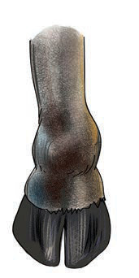
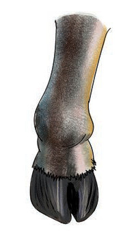
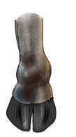
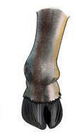
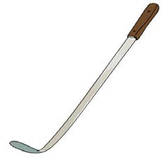

Ninatamka sauti ya herufi kw/ Ninabainisha kwa kutumia tahajia za vidole herufi kw.
Hii ni picha ya nini?


1.Tamka sauti ya mwanzo ya neno ulilotaja/ bainisha kwa kutumia tahajia za vidole herufi ya mwanzo ya neno hilo.
2.Taja maneno mengine yanayoanza na sauti hiyo/ bainisha kwa lugha ya alama maneno mengine yanayoanza na herufi hiyo.
Taja majina ya picha hizi/ Bainishia kwa kutumia lugha ya alama majina ya picha hizi:



1.Majina yapi yana herufi za mwanzo zinazofanana?
2.Jina lipi lina herufi ya mwanzo isiyofanana na nyingine?